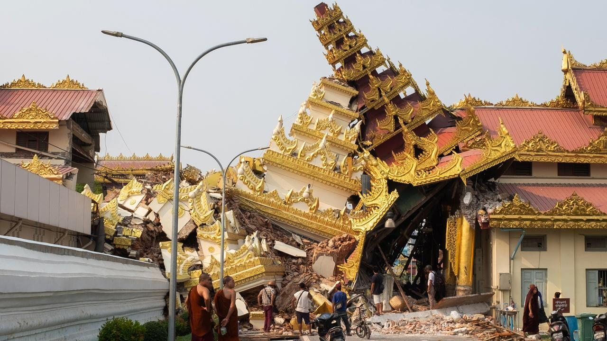
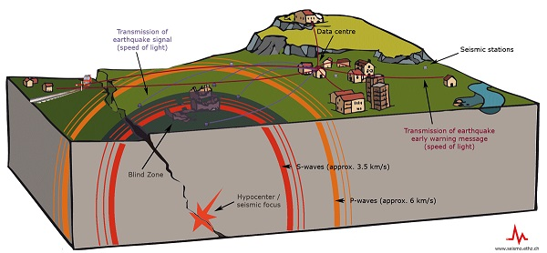
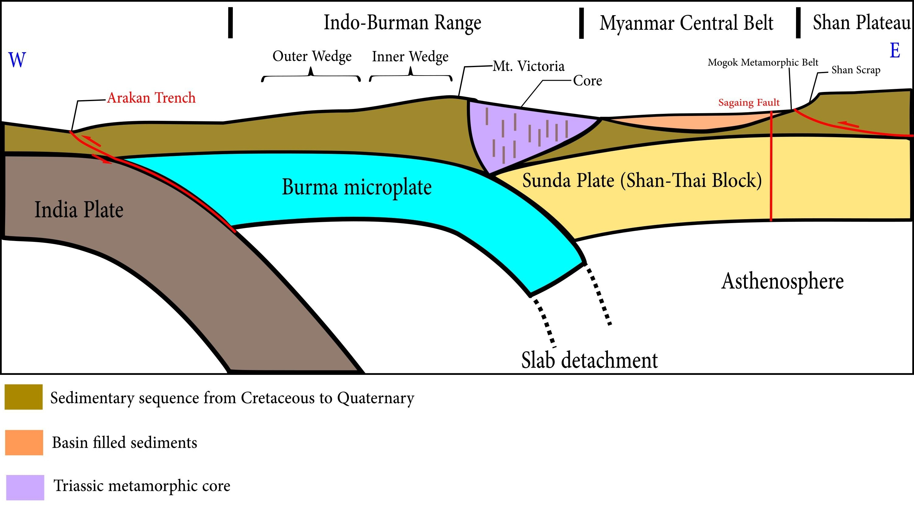
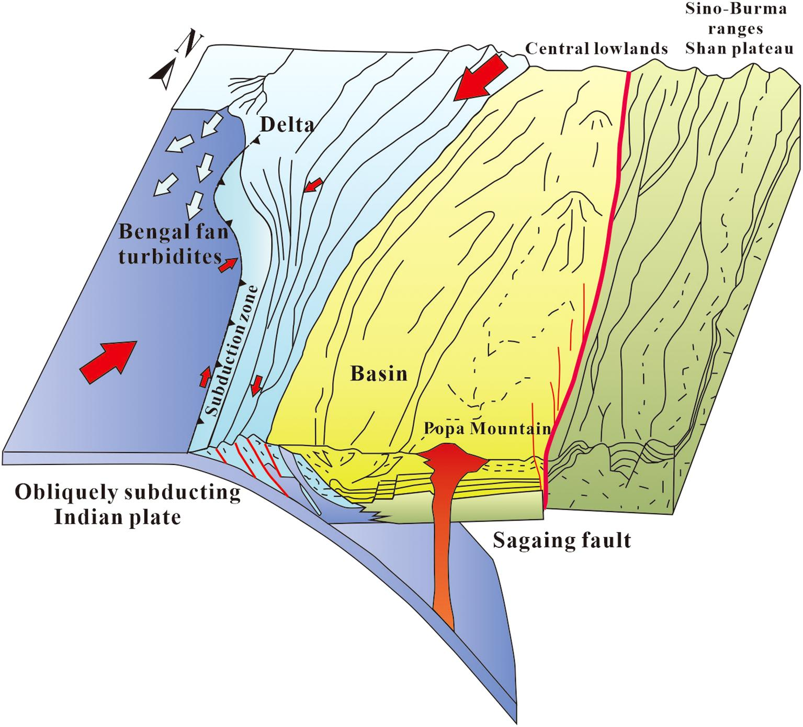
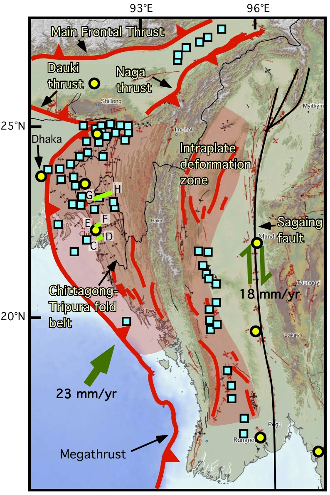
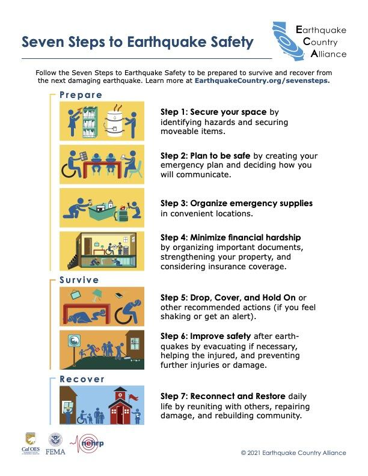

Disaster Awareness • Natural Hazards
The ground beneath us can change in seconds. Understand earthquakes, their dangers, and how communities can prepare for the unexpected.


Understanding Earthquakes
An earthquake is the sudden shaking of the Earth's surface caused by the movement of rocks beneath the ground. Most earthquakes occur when tectonic plates move and release energy along faults.
Earthquakes can vary in strength and duration. They may damage buildings, roads, and infrastructure, trigger landslides, and affect entire communities.
Why It Happens
Understanding the Earth's movements helps us understand earthquakes.

The Earth's plates move slowly, once there is accumulated stress and rocks suddenly slip, energy is released through earthquakes.

Movement of the Indian plate beneath the Burma microplate in western Myanmar results in accumulated pressure and stress at this boundary, occasionally causing sudden movements and earthquakes.

A fault is defined as a crack in the earth's crust. Sudden movement of rocks along these cracks releases seismic energy.
The Consequences
Earthquakes can have serious effects on people, buildings, and the environment.
Strong ground shaking can damage or collapse buildings.
Shaking can cause unstable slopes to collapse.
Some underwater earthquakes can generate dangerous sea waves.
Roads, bridges, electricity, and water supplies can be disrupted.
Be Prepared
Preparation, safer buildings, and community awareness can help protect lives and reduce earthquake damage.

Construct your building. Put all the parts in the building rules. Build your structure strong. Just put all the supports and bases by giving you the base for all the items with concrete and then build your structure flexible with this as it will hold the items together. This will help to give you the flexibility of creating a building which's more efficiently strong against an event.
Look at the safety of buildings, schools, hospitals and other public buildings to see if they are at risk. We need to look at the strengthening of the foundations and walls and the connection of the building parts. Those simple safety measures could well be the difference between life and death for buildings in both old earthquake prone areas of Myanmar where the vast majority of buildings are probably built without any standards at all.
Fix furniture (water heaters, cupboards, bookshelves etc) to the wall. Keep the things on the bottom shelves of your bookcases and cupboards. Keep the items on the shelves of the bookcases and cabinets away from the bed or the room you use most.
Emergency kits (be sure to include drinking water, food, first aid, medications, a flashlight, batteries and a radio). Documents, a whistle and a power bank. Keep this emergency kit in a place that the family can get to in the event of a power cut.
Support family, student and employee preparedness by practicing Drop, Cover and Hold On. Run earthquake drills in schools and at the workplace so people know what to do if they're in a building when an earthquake happens.
Outside identify the safe areas and take the routes to the emergency exits. With the family work out the plans draw up and agree the meeting points and the ways to communicate. With the community select a place to go and set up ways to get information during the emergency. Don't stay inside buildings avoid windows and broken things. Be ready, for more shaking.
Stay Safe
Knowing what to do before, during, and after an earthquake can save lives.
We cannot prevent earthquakes from happening, but we can reduce their impact through preparation, safer buildings, and community awareness.
Explore More Disasters